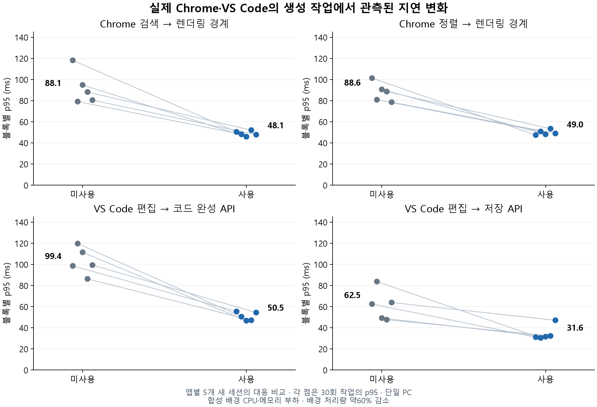

기능보다 판단을 보여주는 프로젝트
무엇을 만들었는지뿐 아니라 왜 그 방식을 선택했고, 무엇을 검증했으며, 어디까지가 아직 미검증인지 기록합니다.
RamFlow — 자원 경쟁 속에서 현재 사용하는 작업의 응답 보호
백그라운드 작업이 CPU·메모리를 함께 사용하면 검색 입력이나 코드 완성이 늦어질 수 있습니다. RamFlow는 사용자가 지정한 배경 작업이 자원을 양보하도록 우선순위를 조정하고, 현재 사용하는 앱의 응답을 보호합니다.
문제에서 구현으로
초기 실험에서는 Working Set을 줄이는 것만으로 전경 작업의 성능 이득을 확인하지 못했습니다. 이후 회수량보다 전경 응답을 목표로 삼아 배경 제어·작업 큐·도구 자체의 상주 비용을 개선했습니다.
01 · 명시적 배경 제어
양보 가능한 실행 파일을 사용자가 지정하면 CPU·메모리 우선순위와 EcoQoS를 조정합니다. 전경·시스템·화이트리스트·신원 불명 대상 보호를 유지하고 설정 변경·일시정지·종료 때 원래 값을 복원합니다.
02 · 메모리를 고려한 큐
예약 여유와 작업의 예상 메모리, Commit 기준을 통과한 작업부터 실행합니다. 기본 동시 실행은 1개이며 대기 작업을 취소할 수 있습니다.
03 · 경량 트레이
창을 닫으면 준비가 확인된 별도 트레이로 전환하고 WPF를 종료합니다. 동일 엔진과 실행 중인 작업을 유지하며, 다시 연 UI는 기존 설정을 읽습니다.
04 · 복귀 비용 보호
가용 RAM이 1GiB 이상이면 Working Set 강제 축소를 보류합니다. 실제 변경 직전 전경과 프로세스 신원을 다시 확인하고, 원래 설정을 저널에 기록해 복원합니다.
실제 앱에서 무엇을 검증했나
단일 PC에서 합성 배경 CPU·메모리 경쟁 부하를 고정하고, 실제 Chrome의 생성 대시보드와 VS Code의 생성 TypeScript 문서를 앱별 5개 새 세션으로 교차 비교했습니다. 각 조건·기능별 30회 측정한 p95를 계산한 뒤 블록 5개의 중앙값을 구했습니다.
| 재현 작업 | 미사용 | 사용 | 지연 감소 |
|---|---|---|---|
| Chrome 검색 → 렌더링 경계 | 88.15ms | 48.14ms | 45.4% |
| Chrome 정렬 → 렌더링 경계 | 88.56ms | 48.95ms | 44.7% |
| VS Code 편집 → 코드 완성 API | 99.36ms | 50.52ms | 49.2% |
| VS Code 편집 → 저장 API | 62.46ms | 31.60ms | 49.4% |

전경 응답에 자원을 양보한 배경 부하의 처리량은 약 60% 감소했습니다. 20개 조건·1,200개 기능 작업의 결과 정확성과 변경한 자원 설정의 원복을 확인했습니다. 이 성능 비교는 배경 우선순위 제어와 실제 Core·트레이를 사용했으며, 작업 큐와 강제 Working Set 축소는 사용하지 않았습니다.
도구 자체의 상주 비용도 줄이다
최신 UI→트레이 전환 측정에서는 UI 부분의 전용 메모리가 55.27→12.57MiB로 줄었고 동일 엔진이 유지됐습니다. 이전 0.3.3→0.3.4 자체 측정에서는 최대 상주 메모리 중앙값 347.6→165.0MiB, 전용 메모리 263.5→80.6MiB를 기록했습니다. 서로 다른 비교의 UI 프로세스 측정값은 별도로 보존했습니다.
검증 자료
Windows API·IPC·실제 큐 자식 실행 218개 assertion, 저장소 26개, 독립 관찰기 38개, 기존 Python 70개 검증을 통과했습니다. 개인 프로필·문서 없이 테스트용 앱 세션과 생성 파일만 사용했습니다.
Chrome·VS Code 실측 보고서 ↗ · 반복별 CSV ↗ · 프로토콜·요약 JSON ↗
한국어 기술 사례 ↗ · English case study ↗ · 기능·복원 검증 ↗ · RamFlow 소스 ↗
Luma — 자동화를 허용하되 실행 권한은 사람에게 남기는 브라우저
브라우저 자동화는 단순한 DOM 클릭을 넘어서야 합니다. 불특정 웹페이지와 AI 응답을 신뢰할 수 없는 데이터로 취급하고, 사용자의 현재 작업과 명시적인 승인을 중심으로 실행 구조를 설계했습니다.
문제 → 설계 선택 → 대가
브라우저와 자원
WinUI 3 네이티브 UI와 WebView2를 조합해 별도 Chromium을 번들하지 않습니다. 비활성 탭 일시 중지는 최선 노력이며 실제 8GB 성능 개선 수치는 아직 측정하지 않았습니다.
자동화의 신뢰 경계
선택된 실제 전경 탭과 문서 식별자를 확인한 뒤에만 제한된 매크로를 실행합니다. 클릭 승인 후에도 대상 상태를 재검사하고, 전송된 효과는 무작정 재시도하지 않습니다.
개인정보와 전달 방식
DPAPI 기반 타입 Vault와 엄격한 폼 필드 제한을 사용합니다. Claude·Gemini 작업 전달은 사용자가 검토한 뒤 직접 붙여 넣고 보내는 방식입니다.
AI 연동의 현재 범위
내부 AgentBrowserFacade는 있지만 외부 MCP·Codex 제어 서버는 아직 없습니다. 이메일·예약·결제 등 자율 실행 기능을 제공한다고 주장하지 않습니다.
개인정보와 실패 경로
공개 코드에서는 매크로를 저장·내보낼 때 민감한 입력값과 위험한 URL을 제한하고, 실행 전후 전경 탭·문서 식별자를 확인합니다. 기존 저장 파일까지 자동 정리하지는 않으며, 외부 사이트의 정책·화면 변경을 모두 통제할 수는 없습니다.
검증과 한계
매크로 동작, DOM Watch, Vault를 위한 회귀 테스트와 Windows 빌드 워크플로가 존재합니다. 하지만 모든 실제 사이트에서 동작한다는 의미는 아니며, 깨끗한 PC 설치·실사용 브라우징·CPU/RAM 성능 수치와 모델 공급자 사이트의 변경 대응은 추가 검증이 필요합니다.
공개 소스 개발 프리뷰입니다. Vault나 실제 계정에 중요한 데이터를 넣기 전, Windows x64에서 직접 빌드하고 비민감 테스트 계정으로 검증하는 것이 권장됩니다.
Subject Japan — 여행자의 작은 불편을 연결하는 로컬 중심 앱
여행 중 번역·쇼핑 사이즈·결제·이동 정보는 서로 다른 앱에 흩어져 있습니다. Subject Japan은 주요 데이터를 기기 안에 두고, 외부 통신이 불가능할 때에도 핵심 문장과 여행 메모를 사용할 수 있도록 설계한 프로젝트입니다.
문제를 분석하고 선택한 구조
- OS별 API 차이: React Native·Expo 공통 UI와 Swift/Kotlin 네이티브 모듈을 분리했습니다. OCR·음성 기능은 플랫폼별 권한이 필요하고 NFC 카드 판독은 실물 기기에서 추가 검증해야 합니다.
- 오프라인 요구: 번역 제공자 계약을 분리하고 ML Kit 모델 설치 여부를 확인합니다. 전용 앱에서만 가능한 기능은 웹·Expo Go에서 불가능함을 표시합니다.
- 데이터 무결성: 프로필·사이즈·번역 기록·일정은 로컬 저장을 우선하고 직렬 쓰기 및 데이터 검증을 사용합니다. 외부 데이터는 앱과 수집 파이프라인의 경계를 나눕니다.
- 사용자 보호: 카메라·마이크·NFC·위치 기능은 필요할 때 호출하며, 앱이 확인하지 못한 잔액이나 번역 결과를 임의 생성하지 않습니다.
코드로 확인된 범위와 남은 문제
Android·iOS 번역 및 여행용 네이티브 모듈, 도메인 단위 테스트, 웹 E2E, iOS 시뮬레이터 빌드 워크플로가 존재합니다. 다만 iPhone 실기기 검증 및 Apple NFC 권한 설정·서명은 별도이며 현재 완료된 것으로 표시하지 않습니다. 실물 FeliCa 카드에서 이용 기록이 20건보다 적을 때의 읽기 종료 조건도 추가 검증이 필요합니다.
Project status: Public source and ARM64 test-signed Android APK. Android·iOS 자동 빌드 검증은 실기기 기능 검증을 대신하지 않습니다. iPhone 설치 패키지 및 스토어 정식 배포는 아직 없습니다.
sEMG 기반 팔꿈치 관절각 연속 추정
이두근·삼두근의 표면근전도(sEMG) 신호로 팔꿈치 관절각을 연속 회귀하는 연구를 진행하고 있습니다. 최종 목표는 로봇팔 제어에 연결할 수 있는 일반화 성능과 낮은 추론 지연을 확인하는 것입니다. 손목·손 제스처 분류는 이 연구의 범위에 포함하지 않습니다.
현재 연구 질문
- 피험자 간 일반화: 사람마다 다른 근활성 패턴 때문에 다른 참여자에게 적용했을 때 오차가 얼마나 커지는가?
- 짧은 보정: 보정 데이터가 0·5·15·30초일 때 MAE·RMSE가 어떻게 달라지는가?
- 경량 추론: 2채널 입력만으로 각도 정확도와 실제 추론 지연의 균형을 어떻게 측정할 것인가?
평가 방향
공개된 팔꿈치 각도·sEMG 동시 측정 데이터를 사용하고, 피험자 독립 분할을 우선합니다. MAE/RMSE, 보정 시간별 오차 곡선, 모델 추론 지연을 구분해 평가할 계획입니다. 전이학습·개인별 보정을 주요 비교 대상으로 검토합니다.
연구 진행 중: 확정되지 않은 정량 성능, 참가자 수, 로봇팔 실시간 구동 성과를 검증 완료로 표현하지 않습니다.
다른 공개 프로젝트
YeaAnBus Open Source
안동·예천 지역 버스 정보 Android 코드 공개본입니다. 실제 API 키가 필요하고 실기기 검증은 별도이며, README 일러스트는 실제 화면이 아닙니다.
GitHub ↗IDEONQ Clinic
가상의 예약·접수·진료 흐름으로 구성된 정적 UI 데모입니다. 운영 서버·실제 환자 데이터·인증 기능은 공개본에 포함하지 않습니다.
인터랙티브 데모 ↗ · GitHub ↗